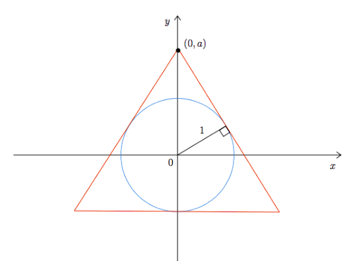
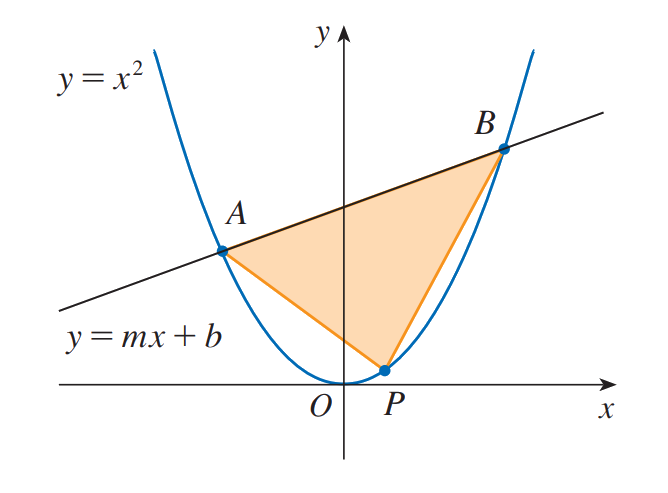

What are the global minimum and maximum values of the function
\[f(x) = x^3 - 7x^2 +14x -8\]
on the interval \([0,4]\)?
What is the minimum vertical distance between
the graphs of these functions?
\[f(x) = 4-(x+1)^2 \quad\text{and}\quad g(x) = (x-3)^2+2\]
We want to construct a box whose base length is three times the base width.
The material used to build the top and bottom cost $10/ft²
and the material used to build the sides cost $6/ft².
If the box must have a volume of \(50\)ft³
determine the dimensions that will minimize the cost to build the box.
(Source)
A manufacturer needs to make a cylindrical can
that will hold \(12\mathrm{fl oz}\) of cream soda.
Determine the dimensions of the can that will
minimize the amount of material used in its construction.
(Recall that for food products in the US,
\(1\mathrm{fl oz} = 30\mathrm{ml}^3\)).
(Source)
Find the dimensions of an isosceles triangle of largest area
that can be inscribed in a circle of radius \(r\).
(Stewart)
If one side of a triangle has length \(a\)
and another side has length \(2a\),
show that \(a^2\) is the maximal possible area of the triangle.
(Stewart)
Over a time period of five years, it is shown that the number
\(N\) of independently owned bakeries is given by
\[ N(t)=2+8.82t-7.73t^2+2.08t^3-0.175t^4 \ \ \ 0\leq t \leq 5 \]
(in millions of bakeries).
Determine the absolute extrema of the function
\(N\) on the interval \([0,5]\) and interpret your results.
(Source, Exercise 5.8.10)
A rectangle is to be inscribed in the ellipse
\[\frac{x^2}{4} + \frac{y^2}{1} = 1\,.\]
with its sides parallel and perpendicular to the coordinate axis—Ie it's not tilted.
What should the dimensions of the rectangle be to maximize its area?
What is the maximum area?
(Source)
Two poles are connected by a wire that is also connected to the ground. The first pole is 20 ft tall and the
second pole is 10 ft tall. There is a distance of 30 ft between the two poles. Where should the wire be
anchored to the ground to minimize the amount of wire needed?
(Source)
Find the equation of the line through \((2,4)\)
that cuts off the least area from the first quadrant.
(Source)
An isosceles triangle is circumscribed about the unit circle so that the equal sides meet at the
point \((0,a)\) on the \(y\)-axis (see the figure).
Find the value of a that minimizes the lengths of the equal sides.
(Stewart)

The line \(y = mx + b\) intersects the parabola \(y = x^2\)
in points \(A\) and \(B\). Find the point \(P\) on the arc
\(AOB\) of the parabola that maximizes the area
of the triangle \(PAB\).
(Stewart)
